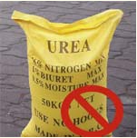
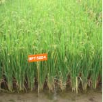

Prevention
- Remove collateral weed hosts from bunds and channels.
- Use only disease free seedlings.
- Avoid excess nitrogen.
- Apply N in three split doses (50% basal, 25% in tillering phase and 25% N in panicle initiation stage).
- Use resistant variety CO 47.
- Spray after observing initial infection of the disease,
Carbendazim 50WP @ 500g/ha

Avoid Excess Nitrogen |

Use Resistant Variety |
Carbendazim |